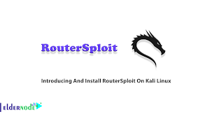
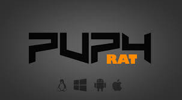

Maintaining access involves creating persistent backdoors or covert channels to retain control over a compromised system, simulating how real attackers ensure long-term infiltration.
>Maintaining access is a crucial phase in penetration testing where attackers ensure they can retain control over compromised systems. This phase includes installing backdoors, creating user accounts, and using remote administration tools to persist access even after reboots or detection.
Use of scheduled tasks, startup scripts, or registry changes to survive reboots.
Deploying tools like Metasploit or Netcat for continuous shell access.

A powerful network scanning tool used for host discovery, port scanning, service detection, and vulnerability enumeration.

A powerful exploitation framework used to test, validate, and exploit system vulnerabilities in ethical hacking scenarios.

A lightweight tool used for port scanning, file transfers, banner grabbing, and reverse shells. Known as the “Swiss Army knife” of networking.

A powerful in-memory payload used within Metasploit to interact with a compromised system and perform post-exploitation tasks.

A fast and flexible login cracker supporting numerous protocols. Used for testing the strength of authentication mechanisms.

A fast and powerful password cracker used for testing password strength and recovering lost credentials.

A graphical cyber attack management tool for Metasploit. It visualizes targets and exploits for easier collaboration and rapid operations.

A powerful browser exploitation tool that allows red teams to control browsers and launch client-side attacks using JavaScript hooks.

An open-source exploitation framework designed for embedded devices like routers, IoT devices, and webcams.
A complete suite of tools for assessing Wi-Fi network security, including packet capture, deauthentication, and password cracking.

An automated tool for detecting and exploiting SQL injection flaws and taking over database servers.
A powerful command-line utility for bidirectional data transfer between two independent data channels — ideal for port forwarding and reverse shells.
A commercial threat emulation tool used by red teams for post-exploitation, covert command-and-control, and lateral movement in networks.

A post-exploitation and C2 framework that uses PowerShell and Python agents for stealthy control of compromised systems.

A multi-platform remote administration and post-exploitation tool with in-memory execution and encrypted C2 channels.